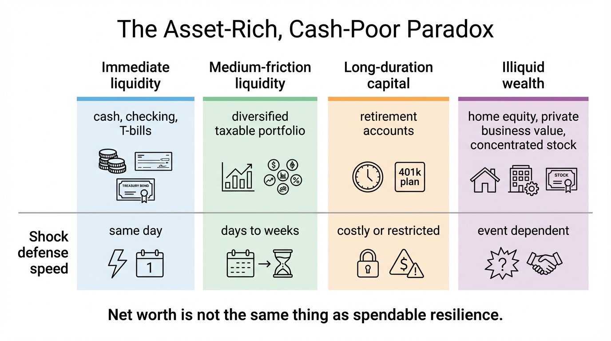
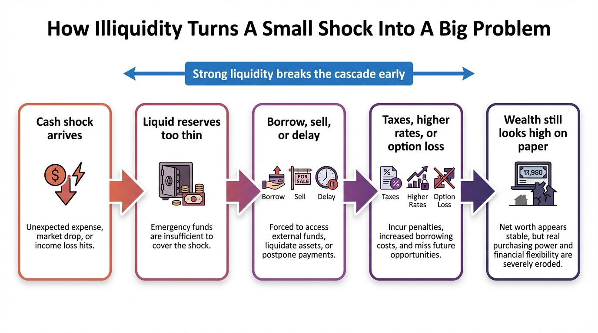

The Asset-Rich, Cash-Poor Paradox
A household can look wealthy on paper and still be fragile on contact with real life. The gap appears when assets are locked inside home equity, retirement wrappers, concentrated business value, or long-duration market exposure while ordinary cash claims still arrive every month.
This is not a fringe problem. It is one of the most common ways modern households misread their own balance sheets. People often assume net worth and resilience move together. They do not. Net worth is a stock measure. Cash resilience is a conversion-and-timing problem. If the household cannot meet a shock without selling under pressure, borrowing at bad terms, or triggering tax friction, the nominal wealth number is overstating its practical strength.
Core thesis: wealth only becomes defensive when enough of it is liquid, low-friction, and available on the timescale of the liabilities it is meant to absorb. Large illiquid assets can raise status and still fail the stress test.

Why Net Worth And Liquidity Diverge
The divergence starts with portfolio composition. The Richmond Fed's review of Survey of Consumer Finances data notes that households in the middle of the wealth distribution hold most of their wealth as real estate, while wealthier households hold larger shares in stocks and private business equity. That means many households who appear asset-rich are actually holding wealth inside structures that are slow, costly, or psychologically difficult to convert into usable cash.
Housing is the clearest example. Home equity can be substantial and still fail to cover a near-term shock cleanly. To access it, the owner usually needs to sell, refinance, open a HELOC, or increase fixed obligations. Each route depends on market conditions, credit access, and time. None behaves like money in a checking account. The same logic applies to retirement balances. A large pretax account can improve long-term solvency and still be poorly matched to an immediate repair bill, job gap, or relocation need.
The Federal Reserve's 2024 household well-being survey keeps the liquidity side grounded. Sixty-three percent of adults said they would cover a hypothetical $400 emergency expense using cash or its equivalent. That means more than one-third still could not do so entirely from immediate liquid resources, even after years of nominal asset appreciation and strong aggregate household balance sheets. The paradox is not rare. It is visible in the national distribution.
Why 2025 And 2026 Made The Problem Harder To Ignore
Higher rates exposed the difference between owning assets and being able to mobilize them. The New York Fed's household debt and credit data for the fourth quarter of 2025 showed HELOC balances rising to $434 billion, continuing the post-2022 expansion. That is a useful signal. It suggests households are still trying to turn housing wealth into liquidity through borrowing rather than refinancing first mortgages, because the old low-rate mortgage stock remains too valuable to disturb.
That does not mean home equity became liquid. It means households found a conditional way to borrow against it. The condition matters. HELOC access depends on underwriting, income, credit profile, local housing values, and the willingness to add another claim on future cash flow. In other words, the household often needs to already look financially stable in order to unlock the asset that headlines count as proof of stability.
The same mismatch shows up in private business equity and concentrated stock positions. A founder can have a large paper valuation and still be unable to meet a household draw without a financing event. An employee can have a seven-figure brokerage account dominated by one employer or one theme and still be balance-sheet fragile because liquidation would trigger concentration losses, taxes, or career correlation at the worst possible time. Asset-rich does not mean transfer-ready.

How The Paradox Actually Hurts Households
The harm is not only financial. It is strategic. Illiquidity narrows choice. A household with strong paper wealth but thin cash reserves may postpone a move, reject a job transition, delay a medical decision, or carry expensive short-term debt to preserve an asset position it technically "owns" but cannot use cheaply. This is why the paradox belongs inside wealth planning rather than emergency-budget discourse alone. It changes life architecture.
It also distorts risk perception. Rising home equity or retirement balances can create emotional permission for higher fixed costs. The household feels richer, so spending commitments creep upward. Then a shock arrives on the cash-flow layer, not the net-worth layer. Property taxes, insurance, tuition, legal fees, relocation, family support, or even temporary unemployment demand liquid capacity now. When liquid capacity is weak, the household starts borrowing against tomorrow in order to defend the appearance of being wealthy today.
This is the mechanism behind many "how can someone with a seven-figure net worth still feel broke?" stories. The feeling is not always irrational. It often reflects bad balance-sheet sequencing. The asset side may be real. The conversion path may still be poor.
Known, Inferred, And Unknown
| Category | Assessment |
|---|---|
| Known | Middle-wealth households hold much of their net worth in real estate rather than immediately spendable cash or equivalents. |
| Known | A large minority of households still cannot cover a modest emergency expense exclusively with cash or its equivalent. |
| Known | HELOC usage rose again as homeowners sought ways to extract equity without replacing low-rate first mortgages. |
| Inferred | The spread between nominal wealth and usable resilience has widened in a high-rate environment because asset conversion became more conditional and more expensive. |
| Unknown | How many households now rely on illiquid-asset confidence to support fixed-cost structures that would fail under a longer income interruption. |
A Better Wealth Test
The corrective is not to ignore illiquid assets. It is to classify them honestly. A useful household balance sheet should separate at least four layers: immediate liquidity, medium-friction liquidity, strategic long-duration capital, and illiquid or event-dependent wealth. Immediate liquidity includes cash and near-cash reserves. Medium-friction liquidity includes diversified taxable assets that can be sold without destabilizing the household. Strategic long-duration capital includes retirement accounts. Illiquid or event-dependent wealth includes primary home equity, private business value, and concentrated positions with meaningful tax or market friction.
Once those layers are separated, the planning problem becomes clearer. A household does not need every dollar to be liquid. It does need enough of the right dollars to be liquid for the shocks it is actually exposed to. That means the emergency fund is only the first step. The deeper question is whether the household can preserve optionality for three types of events: ordinary shocks, strategic opportunities, and forced transitions.
How To Audit The Gap
- Measure liquid months, not only net worth. Calculate how many months of full household spend can be covered without selling the home, touching tax-penalized accounts, or borrowing.
- Discount illiquid assets. Home equity, private business value, and concentrated stock should be haircut for time, taxes, and execution risk when used in planning.
- Stress the conversion path. Ask whether each major asset can be accessed in thirty days, ninety days, or one year, and at what cost.
- Match assets to liabilities by timescale. Near-term obligations need near-term assets. A retirement account does not solve a relocation need if using it creates another problem.
- Treat optionality as part of wealth. The ability to move, wait, change jobs, or fund family shocks without forced selling is a real asset even when it does not maximize headline net worth.
For WealthMeter readers, the useful mental shift is simple. Stop asking only "how much am I worth?" and start asking "which part of this balance sheet can actually defend me?" The answer is often smaller than the top-line number, but more actionable. That smaller number is the one that determines whether wealth behaves like resilience or only like a story.
Further Reading Inside The Site
This article connects directly to The Mortgage Lock-In Trap, The Dual-Income Trap, and The Retirement Age Lie. For a household-wide diagnostic layer, the most relevant tool surfaces remain the Wealth Rank App and the 2026 Reports Hub.
Source List
Jones J and Neelakantan U. Portfolios Across the U.S. Wealth Distribution. Richmond Fed Economic Brief. November 2023.
Board of Governors of the Federal Reserve System. Report on the Economic Well-Being of U.S. Households in 2024. Published May 2025.
Board of Governors of the Federal Reserve System. Survey of Household Economics and Decisionmaking: Unexpected Expenses. Updated May 28, 2025.
Federal Reserve Bank of New York. Quarterly Report on Household Debt and Credit, Q4 2025. Accessed March 30, 2026.
Federal Reserve Bank of New York. Where Are Mortgage Delinquencies Rising the Most?. Liberty Street Economics, February 10, 2026.